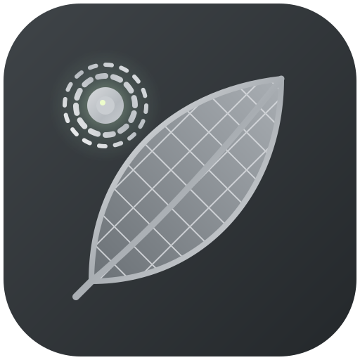

<!doctype html>
<html lang="es">
<head>
<meta charset="utf-8">
<meta name="viewport" content="width=device-width,initial-scale=1">
<meta name="color-scheme" content="light dark">
<title>Atlas Eléctrico de México · VERDALUX</title>
<meta name="description" content="Atlas Eléctrico de México: de los recursos energéticos al consumidor. Proyecto TE1020.">
<link rel="icon" type="image/png" href="assets/favicon-32.png">
<link rel="preconnect" href="https://fonts.googleapis.com"><link rel="preconnect" href="https://fonts.gstatic.com" crossorigin>
<link href="https://fonts.googleapis.com/css2?family=Inter:wght@400;500;600;700;800&display=swap" rel="stylesheet">
<link rel="stylesheet" href="vendor/leaflet/leaflet.css">
<link rel="stylesheet" href="css/style.css">
</head>
<body>
<div class="layout">
  <aside>
    <a href="#inicio" class="brand" style="color:inherit;text-decoration:none"><div class="wm">VERDA<span>LUX</span></div></a>
    <div class="app-name">Atlas Eléctrico de México<br>de los recursos al consumidor</div>
    <nav aria-label="Módulos">
      <a href="#inicio" data-mod="inicio"><b>⌂</b>Inicio</a>
      <a href="#recursos" data-mod="recursos"><b>0</b>Recursos energéticos</a>
      <a href="#generacion" data-mod="generacion"><b>1</b>Generación</a>
      <a href="#transmision" data-mod="transmision"><b>2</b>Transmisión</a>
      <a href="#distribucion" data-mod="distribucion"><b>3</b>Distribución</a>
      <a href="#sabias" data-mod="sabias"><b>?</b>¿Sabías que?</a>
      <a href="#fuentes" data-mod="fuentes"><b>§</b>Fuentes y metodología</a>
    </nav>
    <div class="tools"><button id="btnTema" type="button">☾ Modo oscuro</button><button id="btnPdf" type="button">⎙ Imprimir / PDF</button></div>
    <div class="leg">
      <div><i style="background:var(--fosil)"></i>Fósil</div>
      <div><i style="background:var(--nuclear)"></i>Nuclear</div>
      <div><i style="background:var(--renov)"></i>Renovable</div>
      <div><i style="background:var(--cogen)"></i>Cogeneración eficiente</div>
    </div>
  </aside>
  <main id="view"></main>
</div>
<div class="tip-pop" id="tipPop" role="tooltip"></div>
<script src="vendor/chart.umd.min.js"></script>
<script src="vendor/leaflet/leaflet.js"></script>
<script src="js/data.js"></script>
<script src="js/mexico-contorno.js"></script>
<script src="js/glosario.js"></script>
<script src="js/m0x.js"></script>
<script src="js/m0.js"></script>
<script src="js/m1.js"></script>
<script src="js/m2.js"></script>
<script src="js/m3.js"></script>
<script src="js/m4.js"></script>
<script src="js/fuentes.js"></script>
<script src="js/inicio.js"></script>
<script src="js/app.js"></script>
</body>
</html>
